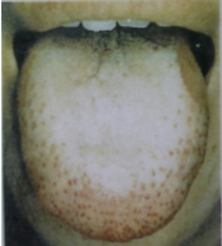
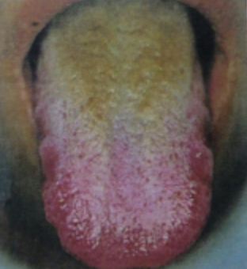
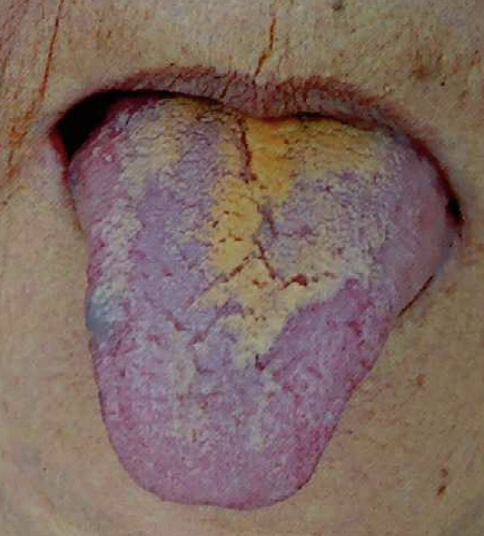
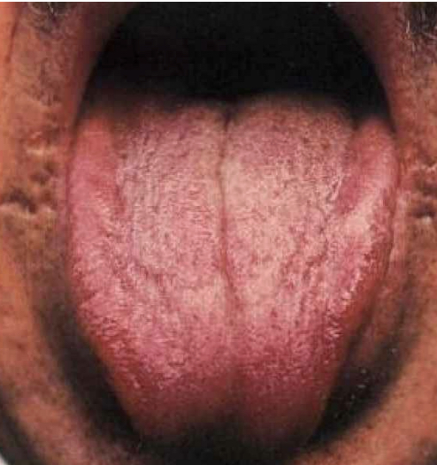

설진 기초
설체 (혀의 몸체)
한열 대비
창백 한
빨강 열
습조 대비
반대설 (부은) 습
수척설 (가는) 조
기타
보라색 어혈
치우침, 떨림, 마비 풍
치흔설 (이빨자국)
양허, 습
설태 (혀의 이끼)
한열 대비
백태 한
황태 열
습조 대비
두꺼운 태 습
건조한 태 조
위치
양 사이드 간
혀 끝 심
복합 분석
양허
한증
이차적 습 유발

종합: 창백한 반대설에 희고 두터운 태 (종종 치흔 동반)
습열
열증
습

종합: 붉은 색이 심하고 누렇고 두터운 태
열로 인한 진액손상
열증
진액손상

종합: 혀는 붉고 표면은 갈라지며, 태는 누렇게 말라 거의 없음
음허로 인한 허열
허열
음허

종합: 붉고 건조하며 태가 없거나 적음